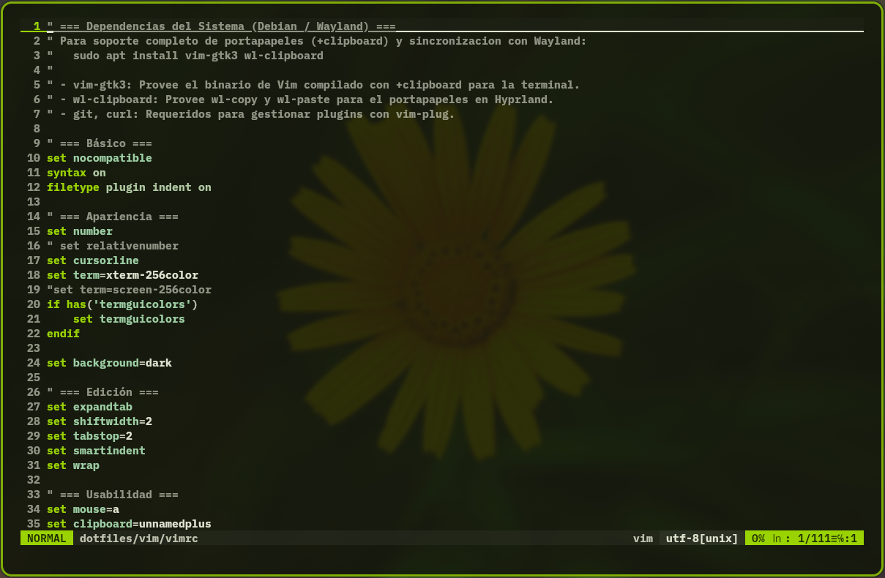

Vim Configuration
Vim serves as the modal terminal text editor in this environment, configured with modern UI ergonomics, dynamic Material Design 3 theming generated by Matugen (with SynthWave '84 as fallback), vim-airline status bar theming, NERDTree file explorer, and full system clipboard synchronization under Debian and Wayland.
File Structure & Paths
- Repository configuration:
~/dotfiles/vim/vimrc - Vim directory & plugins:
~/dotfiles/vim/dot-vim - Active user symlinks:
~/.vimrc->~/dotfiles/vim/vimrc~/.vim->~/dotfiles/vim/dot-vim
System Dependencies (Debian / Wayland)
To enable seamless copy/paste integration with Wayland and manage plugins, the following packages are required on Debian:
vim-gtk3: Replaces the defaultvim.basicbinary with a version compiled with+clipboardand+xterm_clipboard. This activatesset clipboard=unnamedplusin terminal sessions without launching a graphical window.wl-clipboard: Provideswl-copyandwl-pastecommand-line tools for native clipboard buffer management in Wayland / Hyprland.git&curl: Required by thevim-plugpackage manager to fetch and update plugin repositories.
Plugin Architecture (vim-plug)
Plugins are managed via junegunn/vim-plug stored in ~/.vim/autoload/plug.vim and cloned into ~/.vim/plugged/:
preservim/nerdtree: Tree-style directory viewer and file explorer.artanikin/vim-synthwave84: Neon synthwave color scheme kept as an automatic fallback when no Matugen palette has been generated yet.vim-airline/vim-airline: Lightweight, customizable bottom statusline.vim-airline/vim-airline-themes: Theme collection for vim-airline (configured tomatugen, which mirrors the active colorscheme).
Dynamic Matugen Theme
The active colorscheme follows the desktop palette generated by Matugen from the current wallpaper:
- Colorscheme loader:
~/.vim/colors/matugen.vimsources the generated palette from~/.config/themes/current/matugen.vimand silently falls back tosynthwave84if the file does not exist yet. - Airline loader:
~/.vim/autoload/airline/themes/matugen.vimexposes the same palette to vim-airline (normal, insert, visual, replace and inactive section colors). It only sources the generated file when the palette variable is not defined, so highlight groups are never cleared twice on startup. - Generation source:
~/dotfiles/matugen/templates/matugen.vim, wired through the[templates.vim]entry in~/.config/matugen/config.toml. - Airline palette guard: the generated file builds the airline palette only when
g:loaded_airlineis set, becauseairline#themes#generate_color_mapis an autoload function that cannot be detected withexists()before it has been loaded.
The repository vimrc rendered with the generated palette, including the synchronized vim-airline statusline:

Theme refresh workflow
# Regenerate every palette (including matugen.vim) from the active wallpaper
bash ~/dotfiles/themes/apply-matugen.sh
Already running instances pick up the new palette with :colorscheme matugen, which reloads both the highlight groups and the airline palette in place.
Key Settings & Ergonomics
Usability & Editing
- Indentation: 2-space soft tabs (
tabstop=2,shiftwidth=2,expandtab). - Line numbers: Absolute line numbering enabled (
number). - Search: Incremental and case-smart searching (
incsearch,hlsearch,ignorecase,smartcase). - True Color: 24-bit RGB colors enabled when supported by the terminal emulator (
termguicolors). - Mouse: Full pointer support for scrolling and cursor positioning across all modes (
mouse=a). - Clipboard: Centralized synchronization with the system clipboard (
clipboard=unnamedplus).
Keybindings & Floating Help
| Keybinding | Mode | Action |
|---|---|---|
Ctrl + n |
Normal | Toggle NERDTree explorer sidebar |
F1 |
Normal | Open floating cheat sheet popup (:Atajos) |
q / Esc / Enter |
Normal (Popup) | Close floating cheat sheet popup |
Related Documentation
- Alacritty Terminal: GPU-accelerated terminal running Vim.
- Zsh Shell: Interactive shell environment with aliases and CLI tooling.
- Hyprland Compositor: Wayland desktop environment hosting terminal sessions.